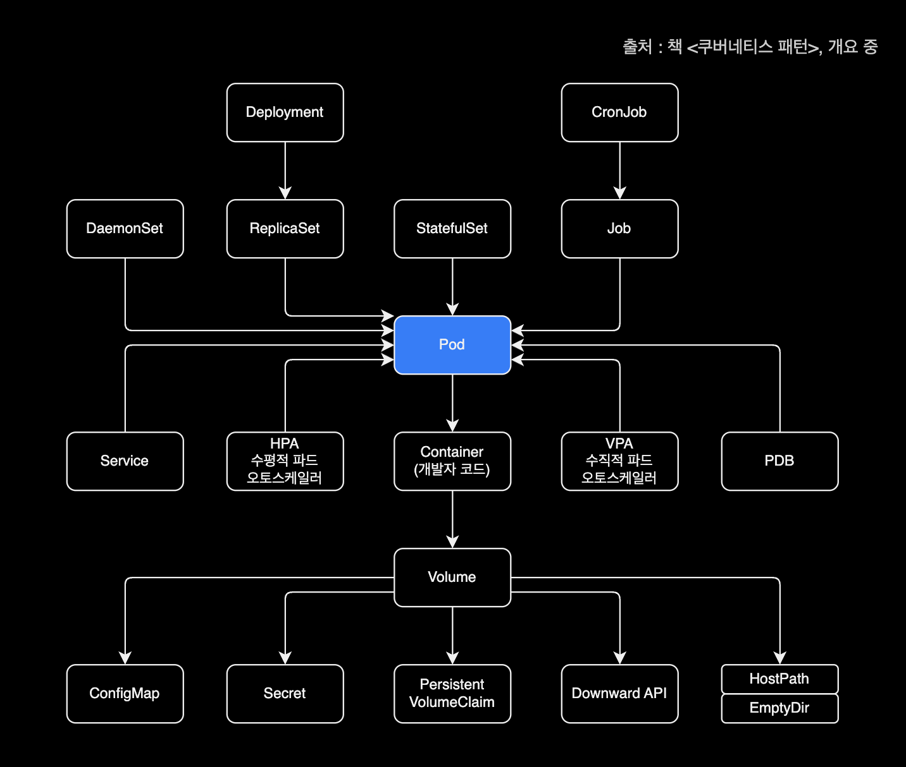
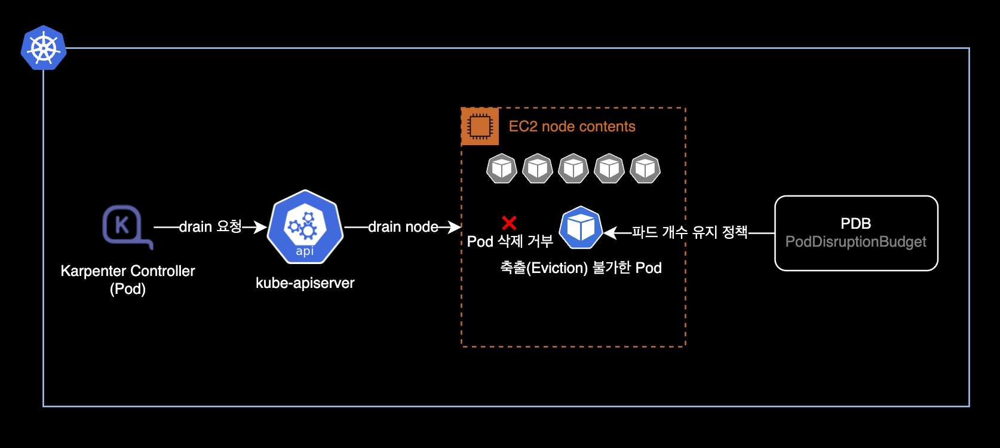

Karpenter PDB is blocking evictions
개요
Karpenter Controller가 불필요 노드를 자동 정리하지 못하는 문제가 발생한 경우 해결방법 기록
환경
클러스터 환경
- Cluster : EC2 기반의 EKS 클러스터
- Kubernetes : v1.24
- Cluster Autoscaler : Karpenter
v0.26.0를 헬름 차트 배포해서 사용중
로컬 환경
- OS : macOS 13.2.1 (Ventura)
- Helm : v3.11.1
- Shell : zsh + oh-my-zsh
배경지식
Karpenter Consolidation
현재 EKS 클러스터에서 운영중인 Karpenter는 provisioners 리소스에 Consolidation 설정이 활성화되어 있습니다.
아래는 provisioners CRD를 배포하는 crds.yaml 파일의 일부 내용입니다.
---
# Reference:
# https://karpenter.sh/v0.26.0/concepts/provisioners/
apiVersion: karpenter.sh/v1alpha5
kind: Provisioner
metadata:
name: default
labels:
app: karpenter
version: v0.26.0
maintainer: younsung.lee
spec:
# Enables consolidation which attempts to reduce cluster cost by both removing un-needed nodes and down-sizing those
# that can't be removed. Mutually exclusive with the ttlSecondsAfterEmpty parameter.
consolidation:
enabled: true
...
위와 같이 spec.consolidation.enabled 값이 true이면 Consolidation 기능을 사용한다는 의미입니다.
spec.consolidation.enabled 값에 대한 설정이 없으면 Karpenter는 Consolidation 기능을 사용하지 않습니다. 이 경우에는 Karpenter가 한 번 노드를 생성하면 해당 노드가 비어있고 불필요한 상태가 되더라도 삭제하지 않고 계속 남아있게 됩니다.
Consolidation 설정이 활성화되어 있는 경우, Karpenter Controller는 자동으로 비어있는 노드를 정리delete하거나 합치는 등의 교체replace 작업을 수행하며 전체 노드들을 자동 관리합니다.
Pod와 PDB의 관계
Pod에 PDBPod Disruption Budget이 붙는 형태라고 이해하면 쉽습니다.
아래는 개발자를 위한 쿠버네티스 리소스 간 관계도입니다.

문제점
Karpenter Controller에서 노드를 자동 정리deprovisioning하지 못하는 문제가 발생했습니다.
$ kubectl get node
NAME STATUS ROLES AGE VERSION
ip-xx-xxx-xxx-176.ap-northeast-2.compute.internal Ready <none> 9h v1.24.9-eks-49d8fe8
ip-xx-xxx-xxx-178.ap-northeast-2.compute.internal Ready <none> 8m27s v1.24.10-eks-48e63af
ip-xx-xxx-xxx-222.ap-northeast-2.compute.internal Ready,SchedulingDisabled <none> 2d6h v1.24.10-eks-48e63af
ip-xx-xxx-xxx-91.ap-northeast-2.compute.internal Ready <none> 4m4s v1.24.10-eks-48e63af
ip-xx-xxx-xxx-236.ap-northeast-2.compute.internal Ready <none> 9h v1.24.9-eks-49d8fe8
ip-xx-xxx-xxx-65.ap-northeast-2.compute.internal Ready <none> 62m v1.24.10-eks-48e63af
Karpenter가 노드를 정리할 때에는 SchedulingDisabled된 이후 drain, Terminating 되며 노드가 자동 정리됩니다.
하지만 현재 해당 222번 노드는 SchedulingDisabled에 멈춰있는 상태입니다.
문제가 발생한 노드의 상세 정보를 확인합니다.
$ kubectl describe node ip-xx-xxx-xxx-222.ap-northeast-2.compute.internal
Events 정보를 확인합니다.
...
Events:
Type Reason Age From Message
---- ------ ---- ---- -------
Warning FailedDraining 4m33s (x30 over 62m) karpenter Failed to drain node, 3 pods are waiting to be evicted
Warning FailedInflightCheck 2m40s (x7 over 62m) karpenter Can't drain node, PDB istio-system/istiod is blocking evictions
Karpenter Controller는 노드를 정리하기 전에 drain 과정을 통해 해당 노드에서 구동중인 모든 파드를 다른 노드로 옮깁니다.
그러나 PDB(PodDisruptionBudget)에 의해 거부되고 있습니다.
원인
PodDisruptionBudget 정책으로 인해 1개로만 운영중인 istiod 파드를 중지할 수 없어 노드 Draining이 거부된 상황입니다.

istiod의 poddisruptionbudget 정보를 확인합니다.
$ kubectl get poddisruptionbudget \
-n istio-system istiod
NAME MIN AVAILABLE MAX UNAVAILABLE ALLOWED DISRUPTIONS AGE
istiod 1 N/A 0 21d
항상 최소 1개의 istiod 파드가 유지되도록 PDBPodDisruptionBudget 정책이 설정되어 있습니다.
Karpenter Controller의 최근 로그도 같이 확인합니다.
$ kubectl logs \
-n karpenter \
-c controller \
-l app.kubernetes.io/name=karpenter
--tail 100
노드가 Draining 실패하는 자세한 원인은 Karpenter 컨트롤러 로그의 inflightchecks 항목에서 확인할 수 있습니다.
2023-03-02T16:24:20.089Z INFO controller.inflightchecks Inflight check failed for node, Can't drain node, PDB istio-system/istiod is blocking evictions {"commit": "39b48fe", "node": "ip-xx-xxx-xxx-222.ap-northeast-2.compute.internal"}
2023-03-02T16:34:20.089Z INFO controller.inflightchecks Inflight check failed for node, Can't drain node, PDB istio-system/istiod is blocking evictions {"commit": "39b48fe", "node": "ip-xx-xxx-xxx-222.ap-northeast-2.compute.internal"}
2023-03-02T16:44:20.090Z INFO controller.inflightchecks Inflight check failed for node, Can't drain node, PDB istio-system/istiod is blocking evictions {"commit": "39b48fe", "node": "ip-xx-xxx-xxx-222.ap-northeast-2.compute.internal"}
2023-03-02T16:54:20.090Z INFO controller.inflightchecks Inflight check failed for node, Can't drain node, PDB istio-system/istiod is blocking evictions {"commit": "39b48fe", "node": "ip-xx-xxx-xxx-222.ap-northeast-2.compute.internal"}
2023-03-02T17:04:20.092Z INFO controller.inflightchecks Inflight check failed for node, Can't drain node, PDB istio-system/istiod is blocking evictions {"commit": "39b48fe", "node": "ip-xx-xxx-xxx-222.ap-northeast-2.compute.internal"}
해결방법
문제 해결방법은 다음 순서대로 진행합니다.
- 노드
drain을 거부하고 있는 문제원인 Pod를 1개에서 2개로 스케일 아웃합니다. - PDBPodDisruptionBudget이 최소 1개 파드를 유지하도록 설정되어 있으므로, 이제 Karpenter가 2개 파드 중 1개 파드를 삭제해도 통과합니다.
- 정리할 노드는 파드가 없이 빈 상태가 됩니다.
- Karpenter Controller가 자동으로 비어있는 노드를 삭제(Terminate)합니다.
상세 해결방법
현재 클러스터 노드 관리 에드온으로 Cluster Autoscaler 대신 Karpenter를 사용중입니다.
$ helm list -n karpenter
NAME NAMESPACE REVISION UPDATED STATUS CHART APP VERSION
karpenter karpenter 3 2023-03-03 01:13:11.505177 +0900 KST deployed karpenter-v0.26.0 0.26.0
헬름 차트 형태로 Karpenter v0.26.0 버전이 클러스터에 배포되어 있습니다.
Karpenter Controller Pod가 정상적으로 동작하고 있는지 확인합니다.
$ kubectl get pod -n karpenter
NAME READY STATUS RESTARTS AGE
karpenter-86b577fd9f-69rxc 1/1 Running 0 9h
karpenter-86b577fd9f-s9gj5 1/1 Running 0 9h
일반적인 경우와 마찬가지로 istiod Pod는 istiod Deployment에 의해 컨트롤 되고 있습니다.
$ kubectl get deploy,pod \
-n istio-system \
-l app=istiod
NAME READY UP-TO-DATE AVAILABLE AGE
deployment.apps/istiod 1/1 1 1 21d
NAME READY STATUS RESTARTS AGE
pod/istiod-59b4475f45-zg2sm 1/1 Running 0 9h
istiod Pod 개수를 1개에서 2개로 늘립니다.
$ kubectl scale deploy \
--replicas 2 \
-n istio-system istiod
deployment.apps/istiod scaled
istiod deploy 상태를 확인합니다.
$ kubectl get deploy -n istio-system istiod
2대의 파드가 Ready 상태로 운영중입니다.
NAME READY UP-TO-DATE AVAILABLE AGE
istiod 2/2 2 2 21d
전체 워커노드 리스트를 다시 확인합니다.
$ kubectl get node
Karpenter Controller가 PodDisruptionBudget 정책을 통과했으므로 222번 노드를 삭제했습니다.
NAME STATUS ROLES AGE VERSION
ip-xx-xxx-xxx-176.ap-northeast-2.compute.internal Ready <none> 18h v1.24.9-eks-49d8fe8
ip-xx-xxx-xxx-178.ap-northeast-2.compute.internal Ready <none> 8h v1.24.10-eks-48e63af
ip-xx-xxx-xxx-91.ap-northeast-2.compute.internal Ready <none> 8h v1.24.10-eks-48e63af
ip-xx-xxx-xxx-236.ap-northeast-2.compute.internal Ready <none> 18h v1.24.9-eks-49d8fe8
ip-xx-xxx-xxx-65.ap-northeast-2.compute.internal Ready <none> 9h v1.24.10-eks-48e63af
Karpenter Controller 로그를 다시 확인해봅니다.
$ kubectl logs -f \
-n karpenter \
-c controller \
-l app.kubernetes.io/name=karpenter
2023-03-02T17:18:57.644Z INFO controller.termination deleted node {"commit": "39b48fe", "node": "ip-xx-xxx-xxx-222.ap-northeast-2.compute.internal"}
문제가 발생했던 222번 EC2 노드를 삭제 완료한 기록을 확인할 수 있습니다.
이제 Karpenter가 노드를 자동 정리(Terminate)하지 못하는 문제가 해결되었습니다.
참고자료
Karpenter - Disruption budgets
Karpenter 공식문서